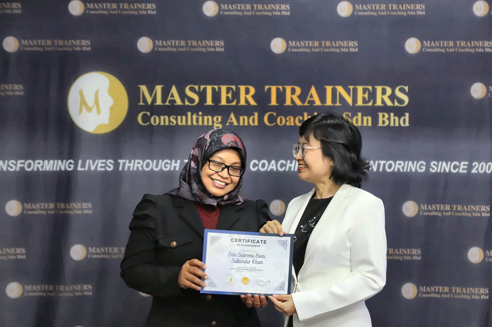
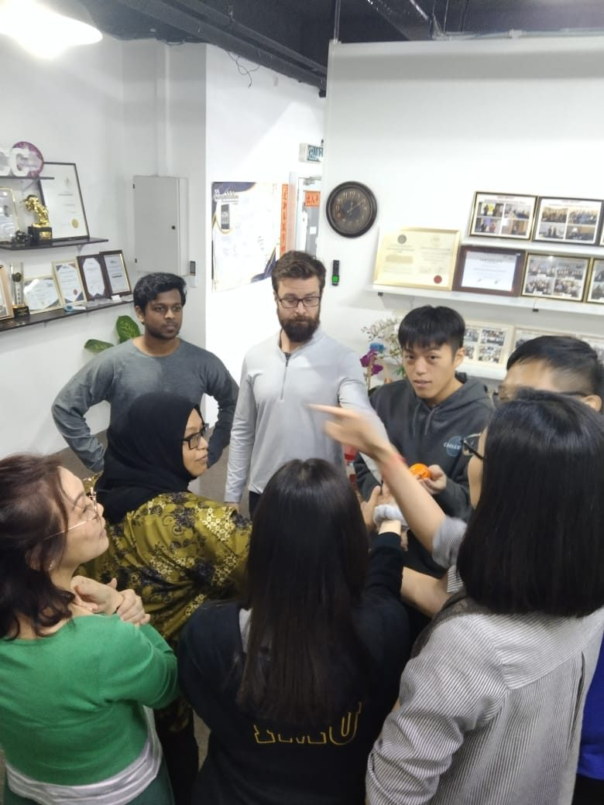
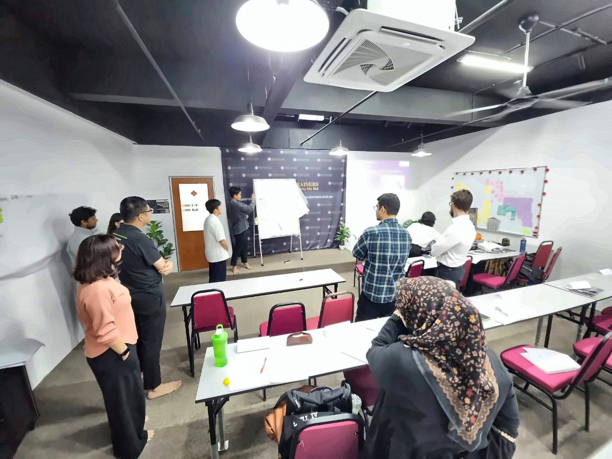
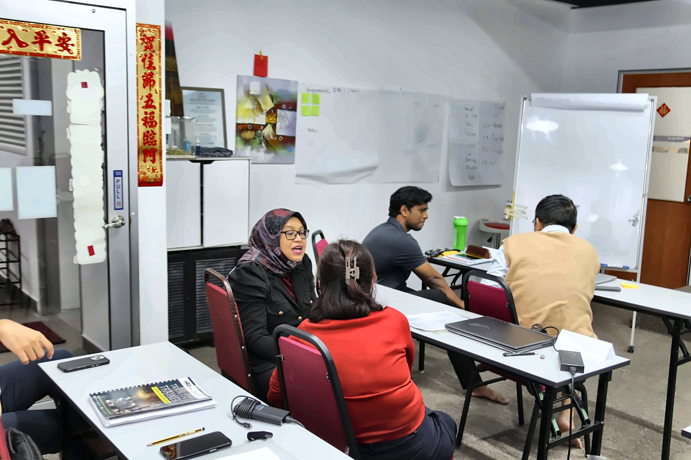
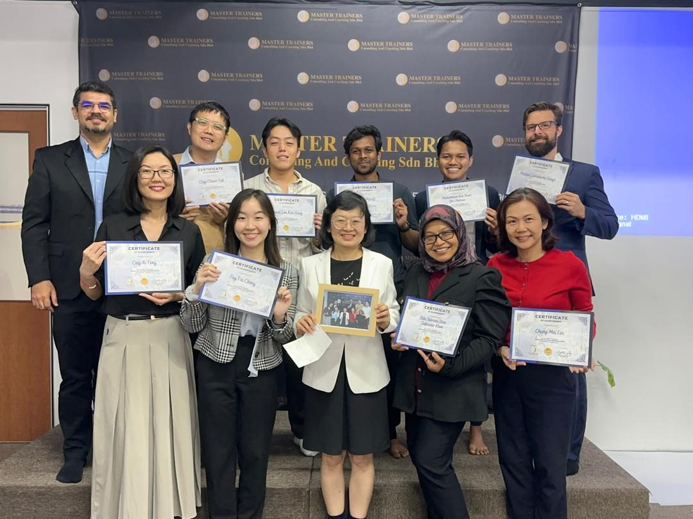

How I got my HRD Corp TTT certificate (while fasting)
12 November 2026 · Ir. Ts. Dr. Bibi Sabrena Sakandar Khan
People keep asking me how to become an HRD Corp trainer. So here is the honest version, including the part nobody warns you about: I did my Train-The-Trainer (TTT) in the fasting month.
Five days. 9 a.m. to 5 p.m. Energiser games, role plays, flipcharts and a final assessment, all without a single sip of teh tarik. Group 171 (Selangor), 2 to 6 March 2026, at Master Trainers Consulting and Coaching Sdn Bhd. And honestly? One of the best weeks I had this year.
First, what is TTT and why does it matter?
If you want to run training that companies can claim from HRD Corp, you need to be recognised under the HRD Corp Trainers' Development Framework (HRD-TDF). In plain words, the path looks like this:
- TTT Certified Trainer. You attend the five-day HRD Corp Train-The-Trainer course and pass. (Some people with the right qualifications or experience apply for a TTT exemption instead.)
- Pre-Accredited Trainer. Once certified, you have a six-month window to get accredited. You can already conduct HRD Corp training during this period.
- HRD Corp Accredited Trainer. For newer trainers, accreditation is by assessment: you submit a video of a real face-to-face training session, and a panel appointed by HRD Corp evaluates you.
- Stay accredited. Accreditation lasts three years. To renew, you need 360 training hours in that period, or you go through the assessment again.
Always check the latest guideline on the HRD Corp Support Centre before you start, because the details do get updated.
My own timeline: TTT certified on 6 March 2026, HRD Corp Accredited Trainer from 26 August 2026. So yes, I used my six months.
Five days in the fasting month
Some things I learnt that are not in any module:
Energiser games hit differently at 3 p.m. in Ramadan. When Ms Ong said "everybody stand up, we are going to play a game," my body said "we are going to sit down, thank you." We played anyway. I survived. The ball survived.

Voice projection without water is a real skill. Trainers talk a lot. Trainers who are fasting learn to talk a lot efficiently.
Nobody offered me kuih, and everybody apologised for eating. I told them please go ahead. I am fasting, not judging.

The part that actually makes you a trainer
The course is not a lecture about training. You practise, you get feedback, and you practise again. We designed sessions, wrote learning outcomes, ran activities for each other, and coached each other in pairs.

Then comes the practical assessment: you deliver a short session of your own, on your own topic, in front of the group and the lead trainer. I picked something close to my heart: "Professional Engineering Interview: A Quick Preparation Guide," for engineers getting ready to face the Board of Engineers Malaysia interview panel. I have sat on the nervous side of that table. Now I wanted to help people walk in prepared.
About Ms Ong Ming See and Master Trainers
A five-day course is only as good as the person running it, and we were lucky.
Ms Ong Ming See is calm and very patient. She noticed when someone was struggling and helped without making them feel small. Her feedback was specific: not "good job," but what exactly worked and what to change. She also kept the energy up for five full days, which, given that one participant (me) was running on sahur alone, deserves its own award.
Master Trainers Consulting and Coaching Sdn Bhd ran everything smoothly. The room was ready, the materials were clear, the schedule was kept, and the paperwork was handled properly. When you are about to become a trainer who has to manage HRD Corp documentation yourself, seeing it done well is part of the lesson.
Our group was a lovely mix of backgrounds and ages, young and not so young. By day five, we were a family. On the last day, the group gave Ms Ong a framed photo and a card full of thank-you notes.

If you are thinking of doing TTT
Choose your academy and lead trainer carefully. You will spend five full days with them. Ask people who have attended. Mine was a good choice.
Pick your assessment topic early. Choose something you know well and care about. It shows when you present.
Plan your accreditation from day one. The six-month pre-accredited window goes fast. Think early about where you will run the real session you need to record.
Bring your experience into the room. TTT teaches you how to train. What you train comes from your years of work. That combination is what participants pay for.
If it falls in Ramadan, go anyway. You will be fine. And no energiser game will ever scare you again.
Thank you, Ms Ong, Master Trainers and my Group 171 classmates. Terima kasih for a week I will remember every time I stand in front of a class. Insya Allah.